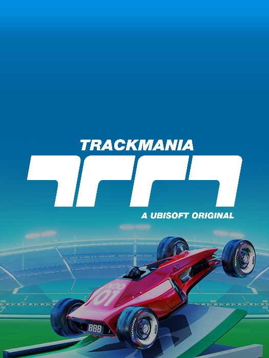

TRACKMANIA: A Pura Adrenalina da Pista Perfeita!
Excelente escolha! Trackmania é puro caos e velocidade. Aqui está uma história de apresentação para ele no estilo "Super Site Radical de Games": TRACKMANIA: A Pura Adrenalina da Pista Perfeita! Você está cansado de jogos de corrida com carros realistas, pistas chatas e regras que te seguram? Cansado de freios, aderência e, bem, da gravidade? Prepare-se para explodir sua mente com TRACKMANIA! Este não é um jogo de corrida; é um playground para viciados em velocidade e engenheiros de pistas malucos! Em Trackmania, a velocidade é rei, a gravidade é uma sugestão e as pistas são obras de arte insanas que desafiam a lógica. Mergulhe em um universo onde carros de corrida atingem velocidades absurdas em loopings gigantes, saltos estratosféricos e curvas que desafiam a física. Acha que consegue o tempo perfeito? Pense de novo! Cada milésimo de segundo conta, e a busca pela linha ideal é uma obsessão que consome sua alma. Mas o verdadeiro coração de Trackmania reside em seu editor de pistas lendário. Sua imaginação é o único limite! Crie as pistas mais insanas que você possa conceber, compartilhe-as com a comunidade e desafie pilotos de todo o mundo a baterem seus recordes. Quer paredes verticais? Túneis de propulsores? Rampas que te lançam ao espaço? Vá em frente! Corra contra o relógio, participe de campeonatos online frenéticos ou apenas relaxe criando e testando suas próprias pistas malucas. Trackmania é uma experiência de corrida pura, focada na habilidade, na criatividade e na alegria de atingir aquela velocidade insana. Você está pronto para a corrida mais radical da sua vida? Pronto para dominar a arte da pista perfeita e deixar todos os seus rivais comendo poeira em um mundo onde o impossível é apenas um aquecimento? TRACKMANIA: Sem freios. Sem limites. Apenas velocidade pura!